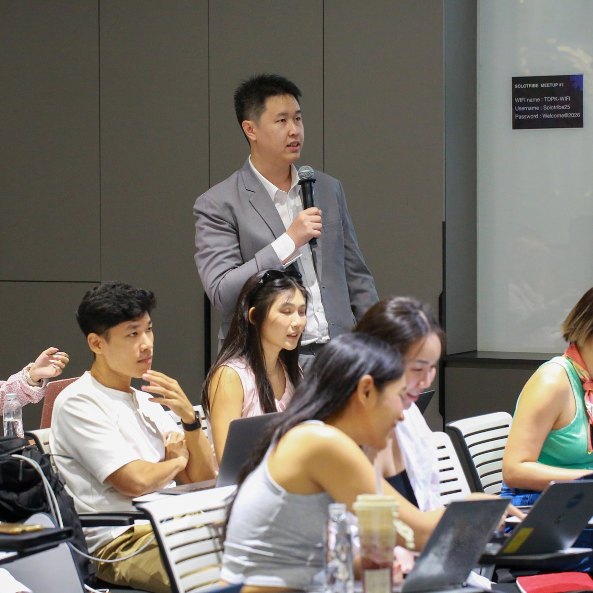
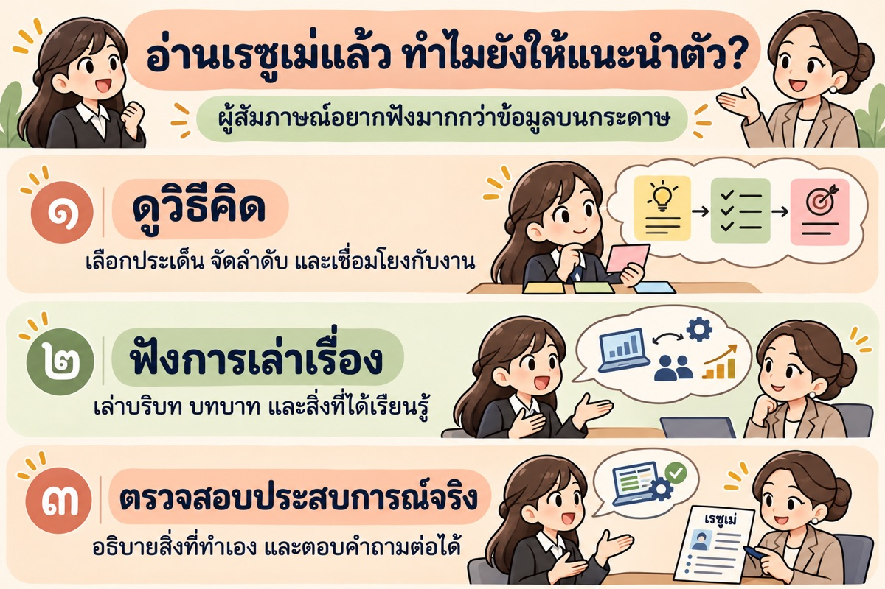
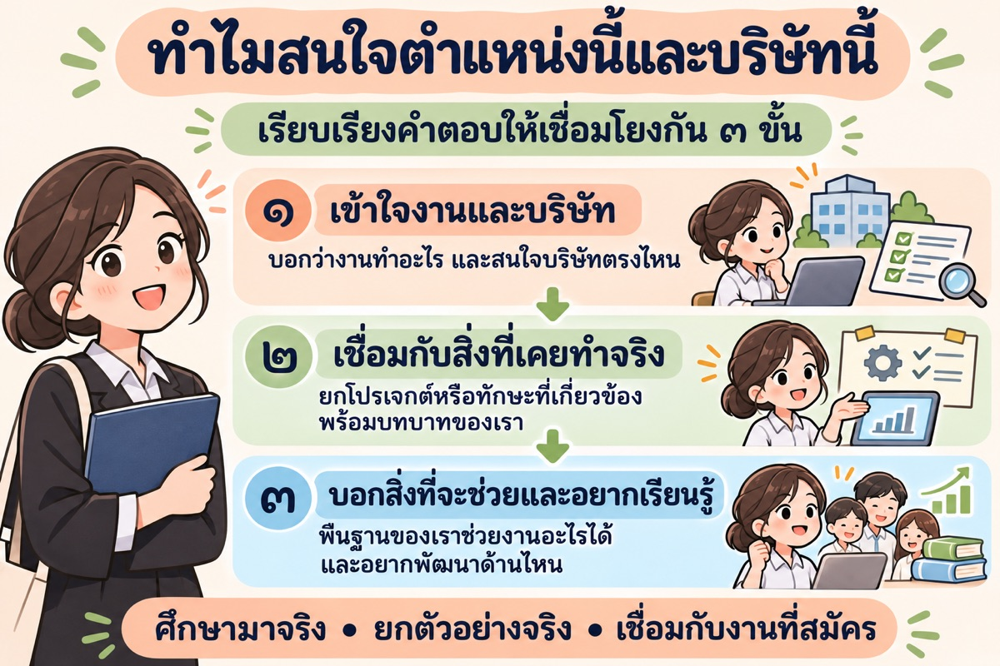
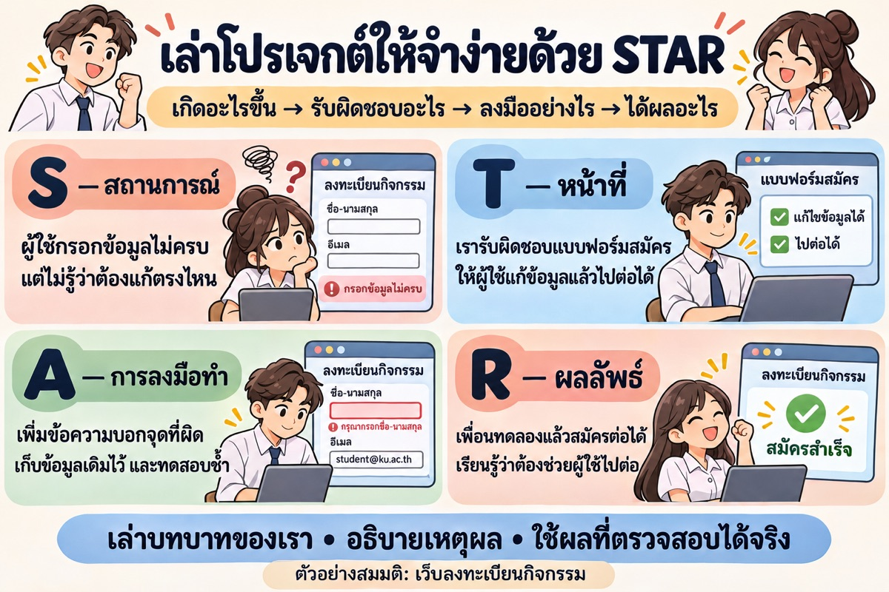

วันนี้จะได้เตรียมอะไรบ้าง
- สิ่งที่ต้องพร้อมก่อนเข้าสัมภาษณ์
- วิธีเล่าประวัติและโปรเจกต์สำหรับเด็กจบใหม่
- คำถามที่ควรเตรียม พร้อมแนวทางตอบ
- ประสบการณ์สัมภาษณ์ของวิทยากร
- ฝึกสัมภาษณ์แบบสบาย ๆ และ Q&A
เวิร์กชอปสำหรับนักศึกษา มจธ. · 3 ชั่วโมง
เตรียมพร้อมสัมภาษณ์งานแรก
Varis Darasirikul (วิทยากร)
เรียนรู้ผ่านตัวอย่างจากงาน Application Development
นำวิธีเล่าไปใช้กับผลงานจริงของคุณได้ทุกสาขา
เวลานับจากเริ่มบรรยาย วิทยากรควบคุมแต่ละช่วงเอง
| ช่วงเวลา | หัวข้อ | นาที |
|---|---|---|
| 00:00–00:10 | เปิดงาน และ Profile วิทยากร | 10 |
| 00:10–00:35 | เตรียมตัวก่อนสัมภาษณ์ | 25 |
| 00:35–01:15 | คำถามและวิธีตอบ | 40 |
| 01:15–01:25 | พัก | 10 |
| 01:25–01:45 | ประสบการณ์และภาษาอังกฤษ | 20 |
| 01:45–02:15 | ฝึกสัมภาษณ์และสรุป | 30 |
| 02:15–02:40 | Checklist 3 นาที + Q&A 22 นาที | 25 |
| รวม | 160 | |
เมื่อเปิด ส่วนนี้จะมองเห็นได้บนจอฉาย
วันนี้เน้นสิ่งที่ใช้ก่อนและระหว่างสัมภาษณ์งานแรก ตั้งแต่เตรียมเอกสาร แนะนำตัว ตอบคำถาม ไปจนถึงดูนักศึกษาฝึกสัมภาษณ์แบบสบาย ๆ ตัวอย่างจะมาจากการพัฒนาแอปเพื่อให้วิทยากรอธิบายได้ถนัด ผู้ฟังต่างสาขานำวิธีเรียบเรียงคำตอบไปใช้กับผลงานของตัวเองได้
เปิด Section Profile วิทยากรถัดไปเพื่อแนะนำตัว ใช้เวลารวมกับช่วงเปิดงานประมาณ 10 นาที แล้วเชื่อมเข้าสู่การเตรียมสัมภาษณ์
อธิบายลำดับสั้น ๆ แล้วเริ่มเนื้อหาเลย ไม่มีกิจกรรมสำรวจความกังวล ไม่ต้องแบ่งกลุ่มหรือคุยกับคนข้าง ๆ หากต้องเลือกชุด IT ให้ถามยกมือสั้น ๆ ว่ามีใครสนใจสมัครงานพัฒนาแอปบ้าง หรือขอข้อมูลจากผู้จัดก่อนงาน
รู้จักวิทยากร

Engineering Lead &
Full-Stack Architect
ประสบการณ์ซอฟต์แวร์กว่า 10 ปี
ทำงานในไทย ฮ่องกง เยอรมนี และญี่ปุ่น
ศิษย์เก่า มจธ. · Computer Multimedia
ไทย → ฮ่องกง → เยอรมนี → ญี่ปุ่น → ไทย
ไทย · 2014–2016
Software Developer (Web & iOS)
เม.ย. 2023 – ต.ค. 2024
Senior Software Engineer
โตเกียว · ญี่ปุ่น · 2024–2026
Senior Software Engineer
ข้อมูลประวัติ: varis.fyi
25 นาที · 00:10–00:35
ตัวอย่างสมมติ
ตัวอย่างสมมติจากงานพัฒนาแอป:
ผู้สมัคร Junior Frontend Developer เตรียมเว็บลงทะเบียนกิจกรรมไว้ แต่ลิงก์เปิดไม่ได้ในวันสัมภาษณ์ จึงควรทดสอบลิงก์ บัญชีตัวอย่าง และเตรียมภาพหน้าจอหรือวิดีโอสั้นสำรองไว้ล่วงหน้า ใช้ข้อมูลจำลองและไม่เปิดเผยรหัสผ่านหรือข้อมูลผู้ใช้จริง ไม่ต้องเขียนแอปใหม่ก่อนวันสัมภาษณ์ เพียงเตรียมผลงานที่มีให้พร้อมอธิบาย
เมื่อเปิด ส่วนนี้จะมองเห็นได้บนจอฉาย
ใช้ checklist อธิบายตามลำดับที่นักศึกษาทำตามได้ อ่านอีเมลนัดให้ครบว่าใช้ภาษาอะไร มีกี่รอบ ต้องทำข้อสอบหรือนำเสนอผลงานหรือไม่ และอนุญาตให้ใช้เครื่องมืออะไร ถ้าออนไลน์ให้ตรวจเขตเวลา ชื่อที่แสดง และการแชร์หน้าจอ หากไปสถานที่จริงให้วางแผนถึงก่อนเวลาและปิดเสียงโทรศัพท์ เตรียมคำถามกลับ 2–3 ข้อด้วย
ตัวอย่างสมมติ
ตัวอย่างสมมติ: ในเรซูเม่เขียนว่า “พัฒนาเว็บลงทะเบียนกิจกรรมด้วย React” คนสัมภาษณ์อาจถามว่า “ทำหน้าไหนเอง” “แบบฟอร์มตรวจข้อมูลอย่างไร” “ถ้าส่งข้อมูลไม่สำเร็จ ผู้ใช้เห็นอะไร” และ “ทำไมเลือก React” ให้วิทยากรสาธิตวิธีไล่ถามต่อจากเรซูเม่หนึ่งบรรทัด ไม่ต้องให้นักศึกษาจัดกลุ่มหรือทำใบงาน จุดประสงค์คือให้ตอบสิ่งที่เขียนไว้ได้ตามจริง ไม่อ้างผลงานของทีมทั้งหมดเป็นของตน
เราอาจคิดว่าต้องดูเก่งและพร้อมทุกอย่าง แต่ในการสัมภาษณ์ตำแหน่งเริ่มต้น บริษัทมักมองหาพื้นฐาน วิธีคิด และศักยภาพที่จะเรียนรู้และทำงานร่วมกับทีม
| สิ่งที่เด็กจบใหม่คิดว่าบริษัทอยากเห็น | สิ่งที่บริษัทอยากเห็นจริง ๆ |
|---|---|
| ต้องตอบได้ทุกข้อ “ถ้าบอกว่าไม่รู้ บริษัทคงไม่รับ” | มีพื้นฐาน และรู้ขอบเขตความรู้ของตัวเอง ตอบสิ่งที่รู้ให้ชัด ถ้ายังไม่รู้ ให้บอกตรง ๆ พร้อมอธิบายว่าจะค้นหาหรือตรวจสอบคำตอบอย่างไร |
| ต้องมีประสบการณ์ทำงานเยอะ “ยังไม่เคยทำงานจริง คงไม่มีอะไรให้เล่า” | มีหลักฐานว่าเรียนรู้และรับผิดชอบงานได้ ใช้โปรเจกต์ในวิชา ฝึกงาน งานพิเศษ หรือกิจกรรม เล่าว่ารับผิดชอบอะไร เจอปัญหาอะไร และเรียนรู้อะไร |
| โปรเจกต์ต้องใหญ่และดูอลังการ “ต้องเล่าผลงานทั้งทีมให้ดูเหมือนเราทำได้ทุกส่วน” | อธิบายสิ่งที่ทำเองและเหตุผลได้ แยกบทบาทของตัวเองจากทีมให้ชัด เล่าทางเลือก เหตุผลที่ตัดสินใจ และผลลัพธ์ที่ถามต่อได้ แม้เป็นงานชิ้นเล็ก |
| ต้องพูดคล่องและดูมั่นใจตลอด “ห้ามหยุดคิดหรือถามกลับ เดี๋ยวดูไม่เก่ง” | ฟังเข้าใจและสื่อสารเป็นลำดับ ถามเพื่อให้เข้าใจโจทย์ตรงกัน ขอเวลาคิดได้ แล้วตอบให้ตรงคำถามพร้อมตัวอย่างที่ชัดเจน |
| ต้องไม่เคยพลาดหรือมีจุดอ่อน “เล่าความผิดพลาดแล้วจะเสียคะแนน” | รับผิดชอบและปรับปรุงตัวได้ เล่าความผิดพลาดตามจริง ว่าแก้ไขอย่างไร รับฟีดแบ็กอย่างไร และทำอะไรเพื่อไม่ให้เกิดซ้ำ |
| ต้องทำทุกอย่างได้คนเดียว “การขอความช่วยเหลือแปลว่าเราไม่พร้อม” | ทำงานร่วมกับคนอื่นและขอความช่วยเหลือเป็น ลองแก้ปัญหาในส่วนที่ทำได้ แจ้งเมื่อมีอุปสรรค และขอคำแนะนำพร้อมบอกสิ่งที่ลองมาแล้ว |
แต่ละบริษัทและตำแหน่งให้น้ำหนักต่างกัน ความพร้อมเรียนรู้ต้องมาพร้อมพื้นฐานที่จำเป็นสำหรับงานนั้น
เมื่อเปิด ส่วนนี้จะมองเห็นได้บนจอฉาย
คำถามปลายเปิดอาจไม่มีคำตอบเดียว แต่คำถามพื้นฐานวิชาและความปลอดภัยยังมีหลักที่ต้องถูกต้อง การสื่อสารดีไม่ทดแทนความรู้ที่จำเป็น และเมื่อไม่แน่ใจต้องไม่เดาในเรื่องที่เสี่ยง
ถามผู้ฟัง: “ถ้าคำตอบสองคนถูกเหมือนกัน เราอยากฟังอะไรเพิ่ม?” ให้ตอบ 1–2 คน
เมื่อเปิด ส่วนนี้จะมองเห็นได้บนจอฉาย
ใช้ตัวอย่างสมมติเว็บลงทะเบียนกิจกรรมตลอดช่วงหลัก ไม่จำเป็นต้องเป็นแอปใหญ่หรือมีผู้ใช้จำนวนมาก เด็กจบใหม่อาจเล่าว่ารับผิดชอบหน้ารายการกิจกรรม แบบฟอร์มลงทะเบียน และข้อความแจ้งเมื่อกรอกผิด สิ่งที่น่าสนใจคือรู้ว่าทำให้ใครใช้ ตัดสินใจอะไรเอง และตรวจอย่างไรว่าทำงานได้ ผู้ฟังต่างสาขาใช้โปรเจกต์จริงของตัวเองได้ ไม่ต้องอ้างว่าเคยพัฒนาแอปหากไม่เคยทำ
เตรียมภาพลักษณ์ให้พร้อมสำหรับบทบาทคนทำงาน: เสื้อผ้าสะอาด รีดเรียบ พอดีตัว และรองเท้าสุภาพ
ตัวอย่างนี้เปรียบเทียบกรณีบริษัทคาดหวังชุดทำงาน หากบริษัทหรือโครงการกำหนดให้ใส่ชุดนักศึกษา ให้ทำตามคำแนะนำในอีเมลนัดสัมภาษณ์
✓ เหมาะสม · ชุดทำงาน
✕ ไม่ตรงบริบท · ชุดนักศึกษา
✓ เหมาะสม · ชุดทำงาน
✕ ไม่ตรงบริบท · ชุดนักศึกษา
ภาพตัวอย่างสร้างด้วย AI เพื่อประกอบการเรียนรู้ · เลือกชุดที่เหมาะกับบริบทบริษัทและสวมใส่ได้มั่นใจ
เตรียมทั้งคำตอบและบุคลิก เพราะความประทับใจเริ่มก่อนคำถามแรก
ผู้สัมภาษณ์เริ่มรู้จักเราตั้งแต่การเดินเข้าห้อง การทักทาย และท่าทีที่มีต่อคนรอบตัว ความรู้สึกแรกอาจมีผลต่อบรรยากาศการคุย ถ้าเขารู้สึกไม่ดีกับเรา เขาอาจถามเจาะลึกหรือท้าทายมากขึ้น แต่ถ้าเขารู้สึกดีกับเรา เขาอาจช่วยขยายคำถาม ให้คำใบ้ หรือเปิดโอกาสให้เราอธิบายเพิ่ม
สิ่งนี้อาจเกิดขึ้นได้ แต่ไม่ใช่กฎตายตัว คำถามยากไม่ได้แปลว่าเขาไม่ชอบเรา และการช่วยใบ้ก็ไม่ได้แปลว่าจะผ่าน สิ่งที่เราเตรียมได้คือบุคลิกที่สุภาพ พร้อมรับฟัง และทำให้คู่สนทนาคุยด้วยได้สบายใจ
ตัวอย่างสมมติ · ปรับคำลงท้ายตามที่ถนัด
“สวัสดีครับ ผม… มาสัมภาษณ์ตำแหน่ง… ขอบคุณที่ให้โอกาสมาพูดคุยกันวันนี้ครับ”
ไม่ต้องท่องทุกคำหรือฝืนเป็นคนช่างพูด เป้าหมายคือเริ่มต้นอย่างสุภาพและพร้อมคุย หากประหม่า ให้หยุดหายใจและค่อย ๆ พูดได้
ภาพการ์ตูนสร้างด้วย AI เพื่อประกอบการเรียนรู้
เมื่อเปิด ส่วนนี้จะมองเห็นได้บนจอฉาย
แสดงตัวอย่างสองแบบสั้น ๆ: รีบตอบโดยยังไม่เข้าใจ กับทวนโจทย์ก่อนตอบ ความประหม่า สำเนียง การพูดช้า หรือการไม่สบตาตลอดเวลา ไม่ใช่หลักฐานว่าไม่มีความสามารถ ไม่ต้องฝืนเป็นคนช่างพูด เน้นความชัดเจนและการให้เกียรติ การแต่งกายให้เหมาะกับบริบทและสะดวกต่อการสัมภาษณ์ ไม่ผูกความสามารถกับรูปลักษณ์
ประโยคฝึก: “ขอเวลาคิดสักครู่นะครับ” และ “ถ้าผมเข้าใจถูก คำถามคือ...ใช่ไหมครับ”
40 นาที · 00:35–01:15
เมื่อเปิด ส่วนนี้จะมองเห็นได้บนจอฉาย
ตัวอย่างต่อเนื่อง: “ทำแอปอะไร” → “ทำหน้าลงทะเบียนเองใช่ไหม” → “ทำไมตรวจข้อมูลก่อนกดส่ง” → “ถ้าอินเทอร์เน็ตหลุด ผู้ใช้ควรเห็นอะไร” ไม่จำเป็นต้องเริ่มที่ศัพท์เทคนิค เป้าหมายคือให้เห็นว่าคำถามต่อเจาะความเข้าใจและบทบาทจริง การถูกถามต่อไม่ได้แปลว่าตอบผิดเสมอไป
คำถาม 1 / 8 · 8 นาที
อ่านเรซูเม่แล้ว ทำไมยังให้แนะนำตัว?
บ่อยครั้งผู้สัมภาษณ์อ่านเรซูเม่และรู้ข้อมูลพื้นฐานของเราแล้ว คำถามนี้จึงเป็นโอกาสให้เขาฟังว่าเราเลือกประเด็น จัดลำดับความคิด และเล่าเรื่องของตัวเองอย่างไร รวมถึงถามต่อเพื่อตรวจสอบว่าสิ่งที่เขียนไว้ตรงกับประสบการณ์และบทบาทจริงของเราหรือไม่
แม้ผู้สัมภาษณ์จะยังไม่ได้อ่านเรซูเม่ คำตอบก็ควรทำให้เขาเข้าใจภาพรวมได้ในตัวเอง และไม่ควรสมมติว่าผู้สัมภาษณ์แต่ละรอบได้รับรายละเอียดจากรอบก่อนครบแล้ว

| คำตอบที่ปิดบทสนทนา | ลองตอบให้ผู้สัมภาษณ์เข้าใจเรา |
|---|---|
“อยู่ในเรซูเม่แล้วครับ / ค่ะ” ไม่ได้ตอบคำถาม และทำให้พลาดโอกาสแสดงวิธีคิดกับการสื่อสาร | “ได้ครับ ผมขอสรุปพื้นฐานและเลือกเล่าโปรเจกต์ที่เกี่ยวกับตำแหน่งนี้ให้ฟังนะครับ…” แล้วเล่าบริบท บทบาท และสิ่งที่ทำจริงให้ชัด |
“เล่าให้คนสัมภาษณ์รอบก่อนฟังไปแล้วค่ะ” ผู้สัมภาษณ์คนนี้อาจยังไม่ได้ฟังรายละเอียด หรืออยากประเมินจากการพูดคุยด้วยตัวเอง | “ได้ค่ะ ดิฉันขอสรุปให้ฟังอีกครั้งนะคะ ดิฉันจบด้าน… และมีประสบการณ์จาก… ซึ่งเกี่ยวกับตำแหน่งนี้ตรงที่…” เล่าได้อย่างสุภาพ แม้จะเป็นเรื่องเดิมจากรอบก่อน |
ตัวอย่างสมมติ
ตัวอย่างสมมติ — แบบที่ยังไม่เห็นภาพ:
“ผมชื่อเอ จบวิศวกรรมคอมพิวเตอร์ ใช้ เครื่องมือพัฒนาเว็บไซต์หลายอย่าง ได้ เป็นคนขยันและเรียนรู้เร็วครับ”
ตัวอย่างสมมติ — แบบเล่าเป็นเรื่อง:
“สวัสดีครับ ผมชื่อเอ เพิ่งจบวิศวกรรมคอมพิวเตอร์ และสนใจตำแหน่ง นักพัฒนาส่วนติดต่อผู้ใช้ระดับเริ่มต้น ครับ ตอนเรียนผมกับเพื่อนทำเว็บลงทะเบียนกิจกรรม เพราะอยากให้คนสมัครดูรายละเอียดและลงทะเบียนได้ในที่เดียว ผมรับผิดชอบหน้ารายการกิจกรรมกับแบบฟอร์มลงทะเบียนด้วยเครื่องมือที่เรียนมา ตอนให้เพื่อนลองใช้ ผมพบว่าข้อความแจ้งกรอกผิดยังไม่ชัด จึงปรับให้บอกว่าต้องแก้ช่องไหนและลองทดสอบอีกครั้ง งานนี้ทำให้ผมสนใจการพัฒนาหน้าจอที่คนใช้เข้าใจ จึงอยากนำพื้นฐานนี้มาใช้ในตำแหน่งที่สมัครครับ”
ชวนผู้ฟังสังเกต:
คำตอบหลังบอกทั้งบริบท บทบาท ปัญหา และความเชื่อมโยงกับงาน จึงมีประเด็นให้ถามต่อ เช่น “ตรวจยังไงว่าข้อความใหม่เข้าใจง่ายขึ้น” ไม่อ้างตัวเลขหรือจำนวนผู้ใช้ที่ไม่มีข้อมูล
กรณีไม่มีโปรเจกต์ใหญ่:
ใช้แอปเล็ก เช่น แอปจดรายการสิ่งที่ต้องทำ แล้วเล่าว่าทำอะไรเพิ่มเองจากตัวอย่าง เช่น แก้ไขรายการ ตรวจช่องว่าง หรือเก็บรายการหลังรีเฟรชหน้า หากทำตามบทเรียนให้บอกตามจริงและแยกส่วนที่ต่อยอดเอง ผู้ฟังที่ไม่ได้สมัคร นักพัฒนาซอฟต์แวร์ ใช้โครงเดียวกันกับผลงานที่เกี่ยวกับตำแหน่งของตน
“ในเรซูเม่เขียนว่าพัฒนาเว็บลงทะเบียน ส่วนไหนที่คุณทำเอง” “ทำไมถึงเลือกแก้ปัญหาด้วยวิธีนี้” “ตรวจยังไงว่าข้อความใหม่เข้าใจง่ายขึ้น” “ส่วนไหนทำตามบทเรียน และส่วนไหนต่อยอดเอง”
เมื่อเปิด ส่วนนี้จะมองเห็นได้บนจอฉาย
ความน่าสนใจมาจากรายละเอียดที่เห็นภาพ ไม่จำเป็นต้องมีประวัติพิเศษ เลือกเล่าเรื่องที่ทำให้ผู้ฟังอยากถามต่อ ไม่ต้องเรียงประวัติตั้งแต่ประถม ไม่อ่านเรซูเม่ทุกบรรทัด และไม่จบด้วยรายชื่อเทคโนโลยียาว ๆ
เริ่มด้วยการถามว่า “ถ้าเขาอ่านเรซูเม่มาแล้ว ทำไมยังขอให้แนะนำตัว?” แล้วอธิบายเรื่องการจัดลำดับความคิด การเล่าเรื่อง และการตรวจสอบประสบการณ์จริง วิทยากรพูดตัวอย่างสองแบบ แล้วชี้ว่าแบบหลังทำให้เห็นอะไรเพิ่ม นักศึกษาฟังและจดได้ ไม่ต้องจับคู่หรือสุ่มตอบในช่วงนี้
คำถาม 2 / 8 · 4 นาที
ผู้สัมภาษณ์อยากเข้าใจ
เห็นว่าศึกษางานมาแล้ว และเชื่อมความสนใจกับสิ่งที่เคยทำจริงได้

ตัวอย่างต่อไปนี้สมมติให้ผู้สมัครเป็นเด็กจบใหม่ที่เคยทำโครงงานรายรับรายจ่าย ประสบการณ์ของผู้สมัครเป็นเรื่องสมมติ ส่วนลักษณะงานอ้างอิงจากประกาศจริง
“ผมสนใจตำแหน่งนี้ เพราะเห็นว่าได้ทำระบบหลังบ้านด้านการเงินครับ ตอนทำโครงงานกลุ่ม ผมรับผิดชอบส่วนบันทึกรายรับรายจ่ายกับดึงข้อมูลมาสรุปยอด มีช่วงหนึ่งยอดรวมไม่ตรง ผมต้องไล่ตรวจข้อมูลกับคำสั่งค้นหา จนพบว่าดึงรายการซ้ำ หลังแก้ก็เพิ่มกรณีทดสอบไว้ครับ ผมรู้สึกชอบงานที่ต้องหาสาเหตุและทำให้ข้อมูลถูกต้อง เลยอยากทำงานด้านนี้ต่อ”
“ที่เลือกอโกด้า เพราะจากประกาศ ผมเห็นว่าทีมให้ความสำคัญกับระบบที่รองรับการใช้งานจำนวนมากและทำงานต่อเนื่องได้ สำหรับงานด้านการเงิน ผมสนใจว่าทีมทดสอบและตรวจสอบความถูกต้องอย่างไรก่อนนำการเปลี่ยนแปลงไปใช้งานจริงครับ อีกอย่าง ตำแหน่งนี้มีทั้งการแก้ปัญหาและตรวจทานโค้ดร่วมกับทีม ซึ่งเป็นวิธีทำงานที่ผมอยากพัฒนาตัวเองให้ทำได้ดีขึ้น”
“พื้นฐานที่ผมนำมาต่อยอดได้คือการเขียนโปรแกรม จัดการฐานข้อมูล และใช้ระบบควบคุมเวอร์ชันร่วมกับเพื่อนครับ โครงงานนี้มีโค้ดกับวิธีทดลองใช้อยู่ในแฟ้มผลงาน สามารถอธิบายส่วนที่ผมทำได้ แต่ผมยังไม่เคยทำระบบการเงินจริงหรือดูแลระบบขนาดใหญ่ ถ้าได้ร่วมทีม ผมตั้งใจทำส่วนที่ได้รับมอบหมายให้ครบทั้งโค้ดและการทดสอบ และนำข้อเสนอแนะจากทีมมาปรับงานครับ”
คำตอบนี้เชื่อมกับประกาศอย่างไร:
ใช้เป็นแนวทางและแทนด้วยประสบการณ์จริงของตนเอง โครงงานไม่จำเป็นต้องเกี่ยวกับการเงิน หากเป็นงานด้านอื่น ให้เชื่อมทักษะที่ใช้จริง เช่น การจัดการข้อมูล การแก้ข้อผิดพลาด หรือการทดสอบ ไม่แต่งประสบการณ์ให้ตรงประกาศ
อ้างอิง: ประกาศตำแหน่งงานหลังบ้านระดับเริ่มต้นที่อโกด้า โดยใช้รายละเอียดประกาศฉบับเต็มที่ได้รับมา
คำถามต่อ: “รู้จักผลิตภัณฑ์จากไหน” “งานส่วนไหนที่คิดว่ายังต้องเรียนรู้เพิ่ม”
เมื่อเปิด ส่วนนี้จะมองเห็นได้บนจอฉาย
บอกให้ชัดว่าอะไรเป็นข้อมูลที่อ่านมา อะไรเป็นสิ่งที่อยากถามเพิ่ม ไม่แต่งว่าตนเคยใช้ผลิตภัณฑ์จริงหากไม่ได้ใช้ และไม่ใช้แค่ “บริษัทมั่นคงและมีชื่อเสียง” โดยไม่เชื่อมกับงาน
คำถาม 3 / 8 · 6 นาที
ผู้สัมภาษณ์อยากเข้าใจ
เห็นหลักฐานการลงมือทำ เหตุผลในการตัดสินใจ และผลที่ตรวจสอบได้
ใช้ผลที่ตรวจได้จริง ไม่แต่งตัวเลข ผลลัพธ์ หรือความสามารถเพื่อให้คำตอบดูดี

ตัวอย่างสมมติ: นักศึกษาทำเว็บลงทะเบียนกิจกรรมในวิชาโปรเจกต์ แยกให้เห็นโครงสร้าง STAR ทั้ง 4 ส่วน โดยตอนสัมภาษณ์สามารถเล่าต่อเนื่องเป็นเรื่องเดียวได้ ไม่ต้องพูดชื่อหัวข้อ
“ทีมผมทำเว็บลงทะเบียนกิจกรรมในวิชาโปรเจกต์ครับ ตอนให้เพื่อนทดลองใช้ พบว่าบางคนส่งข้อมูลไม่ครบ แต่ไม่รู้ว่าต้องแก้ช่องไหน ทำให้สมัครต่อไม่ได้ครับ”
ส่วนนี้ช่วยให้ผู้สัมภาษณ์เข้าใจ: เราทำอะไรให้ใครใช้ และพบปัญหาอะไร โดยยังไม่ต้องลงรายละเอียดทุกส่วนของโปรเจกต์
“ผมรับผิดชอบแบบฟอร์มสมัครครับ ส่วนที่ผมต้องปรับคือทำให้ผู้ใช้รู้ว่าข้อมูลตรงไหนยังไม่ครบ และแก้ไขแล้วสมัครต่อได้ โดยไม่ต้องกรอกข้อมูลทั้งหมดใหม่ครับ”
ส่วนนี้ช่วยให้ผู้สัมภาษณ์เข้าใจ: หน้าที่และเป้าหมายของเรา แยกจากผลงานรวมของทีมอย่างชัดเจน
“ผมลองทำตามขั้นตอนที่เพื่อนติด แล้วเพิ่มข้อความใต้ช่องที่กรอกผิด เพื่อให้เห็นทันทีว่าต้องแก้อะไร พร้อมเก็บค่าช่องอื่นไว้ เพราะข้อมูลที่ถูกอยู่แล้วไม่ควรต้องกรอกซ้ำครับ จากนั้นผมทดสอบทั้งกรอกข้อมูลครบ ข้อมูลขาด และกรณีส่งไม่สำเร็จตามรายการที่เตรียมไว้ แล้วให้เพื่อนลองใช้อีกครั้งครับ”
ส่วนนี้ช่วยให้ผู้สัมภาษณ์เข้าใจ: สิ่งที่เราลงมือทำเอง วิธีคิด เหตุผลที่เลือกวิธีแก้ และวิธีตรวจสอบงาน ไม่ใช่เพียงบอกว่า “ช่วยกันทำจนเสร็จ”
“หลังแก้ ในรอบที่ให้เพื่อนทดลองซ้ำ เพื่อนเห็นว่าต้องแก้ช่องไหนและสมัครต่อได้ ส่วนข้อมูลช่องอื่นยังอยู่ครับ ผมภูมิใจที่แก้ปัญหาที่เห็นจากการใช้งานได้จริง และได้เรียนรู้ว่าแบบฟอร์มที่ดีไม่ใช่แค่ส่งข้อมูลได้ แต่ต้องช่วยให้ผู้ใช้รู้ด้วยว่าควรทำอะไรต่อครับ”
ส่วนนี้ช่วยให้ผู้สัมภาษณ์เข้าใจ: ผลที่ตรวจสอบได้จากการทดลองใช้ และสิ่งที่เราเรียนรู้ ผลนี้ยังเป็นการทดสอบกับเพื่อน ไม่ใช่หลักฐานว่าระบบพร้อมรองรับผู้ใช้จริงจำนวนมาก
เวลาเล่าจริง ให้บริบทและหน้าที่กระชับ แล้วเน้นสิ่งที่ลงมือทำ เหตุผล และผลลัพธ์ ใช้เฉพาะประสบการณ์ของตัวเอง หากไม่ได้วัดเป็นตัวเลข ให้เล่าผลที่สังเกตหรือตรวจสอบได้ ไม่ต้องแต่งตัวเลขให้ดูน่าประทับใจ
คำถามต่อ:
“ส่วนไหนทำเอง” “ทำไมเก็บข้อมูลเดิมไว้” “ตรวจฝั่งหน้าเว็บอย่างเดียวพอหรือไม่”
สำหรับผู้ฟังทั่วไปใช้สองคำถามแรก ส่วนคำถามเรื่องการตรวจฝั่งหลังบ้านเก็บสำหรับผู้สมัครสาย IT ไม่ต้องขยายเป็นบทเรียนระบบเว็บ
เมื่อเปิด ส่วนนี้จะมองเห็นได้บนจอฉาย
ใช้ STAR เป็นตัวช่วยเรียบเรียง ไม่ต้องพูดชื่อหัวข้อออกมา
เตือนว่าใช้ผลที่ตรวจได้จริง หากไม่ได้วัดความพึงพอใจหรือเวลาใช้งาน อย่าสรุปว่าเพิ่มขึ้นหรือลดลงกี่เปอร์เซ็นต์
คำถาม 4 / 8 · 4 นาที
ผู้สัมภาษณ์อยากเข้าใจ
เราช่วยทีมได้อย่างไร รู้ข้อจำกัดของตัวเองแค่ไหน และจัดการข้อจำกัดนั้นได้หรือไม่
คำถามนี้ช่วยให้บริษัทประเมินความเสี่ยงในการรับเราเข้าทำงานด้วย ถ้าคำตอบทำให้กังวลว่าเราจะทำหน้าที่หลักไม่ได้ หรือสร้างปัญหาให้ทีมโดยยังไม่มีวิธีจัดการ ก็อาจกลายเป็นเหตุผลให้ไม่รับเข้าทำงานได้ แม้คำถามนี้ไม่ได้มีไว้คัดออกเพียงอย่างเดียว
หากข้อจำกัดกระทบคุณสมบัติหลักของงานจริง หรือถูกถามตรง ๆ ให้ตอบตามจริงพร้อมวิธีรับมือ ไม่แต่งจุดอ่อนที่ไม่มีจริง ไม่อ้างว่าพัฒนาแล้วโดยไม่มีหลักฐาน และไม่ใช้คำชมตัวเองแทนจุดอ่อน เช่น “ตั้งใจทำงานมากเกินไป”
ตัวอย่างสมมติของเด็กจบใหม่ที่เคยทำโปรเจกต์กลุ่ม ใช้ดูวิธีเรียบเรียง แล้วเปลี่ยนเป็นประสบการณ์จริงของตัวเอง
“จุดแข็งของผมคือทำงานเป็นขั้นตอนครับ ตอนทำโปรเจกต์กลุ่ม ผมแบ่งงานส่วนที่รับผิดชอบเป็นรายการย่อย แล้วตรวจทีละข้อก่อนส่งให้เพื่อน เช่น ข้อมูลครบไหม และส่วนที่ผมทำใช้ได้ตามที่ตกลงกันไหม ทำให้เพื่อนรับงานไปทำต่อได้โดยไม่ต้องกลับมาถามว่าผมทำถึงไหนครับ”
ทำไมคำตอบนี้ชัด: บอกจุดแข็งเพียงเรื่องเดียว มีตัวอย่างว่าเราทำอะไร และอธิบายว่าช่วยทีมอย่างไร
“สิ่งที่ผมกำลังฝึกคือการสรุปความคืบหน้าให้กระชับครับ เวลารายงานโปรเจกต์ ผมเคยเล่าทุกขั้นตอนก่อนบอกว่างานถึงไหน ทำให้เพื่อนต้องถามซ้ำว่าสรุปแล้วเสร็จอะไรบ้าง ตอนนี้ผมเตรียมไว้สามข้อก่อนพูด คือ ทำเสร็จอะไร ติดอะไร และจะทำอะไรต่อ ในการประชุมครั้งล่าสุด เพื่อนเข้าใจสถานะงานและคุยเรื่องถัดไปได้เลยครับ แต่ถ้ามีรายละเอียดเยอะ ผมยังต้องจดหัวข้อช่วยอยู่ครับ”
“ยกตัวอย่างงานที่คุณแบ่งเป็นขั้นตอนได้ไหม” “รู้ได้อย่างไรว่าสรุปงานได้ชัดขึ้น” “ถ้าต้องอธิบายเรื่องซับซ้อนให้เพื่อนที่ไม่รู้พื้นฐาน คุณจะเตรียมอย่างไร”
เมื่อเปิด ส่วนนี้จะมองเห็นได้บนจอฉาย
เน้นว่าคำถามนี้อาจใช้คัดกรองความเสี่ยง แต่ไม่ควรสอนให้โกหกหรือซ่อนข้อจำกัดสำคัญ ให้ผู้เรียนแยก “นิสัยเสียแบบเหมารวม” ออกจาก “ทักษะเฉพาะที่กำลังฝึก” และเลือกตัวอย่างจริงที่ตอบคำถามต่อได้ ความเหมาะสมขึ้นกับตำแหน่ง เช่น งานที่ต้องสื่อสารเป็นหน้าที่หลักอาจประเมินเรื่องนี้เข้มกว่างานอื่น ไม่มีจุดอ่อนข้อใดปลอดภัยสำหรับทุกงาน
ไม่ต้องเปลี่ยนข้อเสียเป็นคำชมตัวเอง เช่น “ขยันเกินไป” และไม่ต้องเปิดเผยเรื่องส่วนตัวที่ไม่เกี่ยวกับงาน
คำถาม 5 / 8 · 4 นาที
ผู้สัมภาษณ์อยากเข้าใจ
รับผิดชอบต่อสิ่งที่เกิดขึ้น รับมือผลกระทบ และเรียนรู้เพื่อป้องกันซ้ำ
ตัวอย่างสมมติ
ตัวอย่างสมมติ: “ผมเคยทดสอบเว็บเฉพาะบนคอมพิวเตอร์ ทำให้วันนำเสนอพบว่าปุ่มสมัครถูกบังบนมือถือครับ ผมแจ้งทีมและแก้หน้าจอในส่วนที่รับผิดชอบ หลังจากนั้นเราเพิ่มการตรวจบนหน้าจอขนาดเล็กไว้ในรายการทดสอบก่อนส่งงาน สิ่งที่ผมเรียนรู้คือหน้าที่เปิดได้บนเครื่องผมยังไม่แปลว่าผู้ใช้ทุกคนใช้งานได้ครับ”
คำถามต่อ: “ถ้าเพิ่งเจอก่อนนำเสนอหนึ่งชั่วโมง จะทำอะไรก่อน”
เมื่อเปิด ส่วนนี้จะมองเห็นได้บนจอฉาย
เน้นความรับผิดชอบและหลักฐานว่าได้ปรับจริง ไม่กล่าวโทษเพื่อนหรือเลือกเรื่องแต่งที่ดูดีทุกด้าน
คำถาม 6 / 8 · 4 นาที
ผู้สัมภาษณ์อยากเข้าใจ
ฟังเหตุผล ใช้เป้าหมายร่วมและข้อจำกัดในการหาข้อตกลง
ตัวอย่างสมมติเพื่อฝึกตอบคำถาม ไม่ใช่ประสบการณ์จริงของผู้สมัคร
สมมติว่าเรากับเพื่อนกำลังทำเว็บลงทะเบียนกิจกรรมเป็นโปรเจกต์กลุ่ม เหลือเวลาอีกหนึ่งสัปดาห์ก่อนส่งอาจารย์ แต่ระบบสมัครยังทำไม่เสร็จ เพื่อนเสนอให้เพิ่มแชตเพื่อให้ผู้สมัครถามผู้จัดได้สะดวก ส่วนเรากังวลว่าถ้าเพิ่มงานตอนนี้ ระบบสมัครที่จำเป็นต้องส่งอาจไม่เสร็จทันเวลา
ทั้งสองฝ่ายอยากให้งานออกมาดี: เพื่อนมองเรื่องความสะดวกของผู้ใช้ ส่วนเรามองเรื่องงานหลักและกำหนดส่ง ความเห็นต่างจึงอยู่ที่ “ควรทำอะไรก่อน” ไม่ใช่ว่าใครไม่อยากช่วยทีม
“ผมจะเริ่มจากทำความเข้าใจเหตุผลของเพื่อนก่อนครับ เช่น ถ้าทีมทำเว็บกิจกรรมแล้วเห็นต่างกันว่า ควรเพิ่มแชตหรือทำระบบสมัครให้เสร็จก่อน ในขณะที่เหลือเวลาส่งงานอีกหนึ่งสัปดาห์ ผมจะคุยกับเพื่อนแบบนี้ครับ”
คำถามนี้ถามว่า “จะทำอย่างไร” จึงตอบเป็นแนวทางได้ หากมีเหตุการณ์จริงให้ใช้เรื่องของตัวเอง ไม่เล่าตัวอย่างสมมติเหมือนเป็นประสบการณ์จริง
“ผมจะถามเหตุผลของเพื่อนก่อนครับ ว่าทำไมถึงอยากเพิ่มแชต ถ้าเพื่อนกังวลว่าผู้สมัครไม่มีช่องทางถามผู้จัด ผมก็จะทวนว่าเราอยากให้ผู้สมัครติดต่อผู้จัดได้สะดวกเหมือนกันครับ”
เหตุผล: เข้าใจความต้องการที่อยู่เบื้องหลังข้อเสนอ ก่อนตัดสินว่าวิธีของใครดีกว่า
“จากนั้นผมจะอธิบายว่าผมกังวลเรื่องเวลาครับ เพราะเหลือหนึ่งสัปดาห์ และระบบสมัครยังทำไม่ครบ ถ้าเพิ่มแชตตอนนี้ เราอาจทำส่วนที่ต้องส่งไม่ทัน ผมจะชวนเพื่อนดูเกณฑ์ส่งงานกับรายการที่ยังไม่เสร็จด้วยกันครับ”
เหตุผล: ใช้ข้อมูลที่ตรวจสอบร่วมกันได้ เช่น เวลาและขอบเขตงาน แทนคำว่า ‘ผมว่าแบบนี้ดีกว่า’
“ผมจะเสนอให้ทำระบบสมัครให้เสร็จก่อน และใส่อีเมลติดต่อผู้จัดไว้ชั่วคราว เพื่อให้ผู้สมัครยังถามคำถามได้ ส่วนแชตค่อยพิจารณาหลังจากงานหลักเสร็จ แล้วถามเพื่อนว่าทางเลือกนี้ยังติดปัญหาอะไรไหมครับ”
เหตุผล: ไม่ได้ปัดความคิดเพื่อนทิ้ง แต่หาวิธีตอบโจทย์เดียวกันภายในเวลาที่มี และเปิดให้เพื่อนช่วยปรับข้อเสนอ
“ถ้าทีมเห็นด้วย ผมจะสรุปว่าใครทำอะไรและเสร็จเมื่อไร โดยรับผิดชอบทดสอบขั้นตอนสมัครครับ ถ้ายังตกลงกันไม่ได้ ผมจะสรุปทางเลือกกับผลกระทบให้ผู้รับผิดชอบตัดสินใจตามเกณฑ์ที่ทีมตกลงกัน และพร้อมปรับตามเหตุผลหรือข้อมูลใหม่ครับ”
เหตุผล: ทำให้บทสนทนาจบด้วยงานที่เดินต่อได้ แสดงความรับผิดชอบ และไม่ได้ตั้งเงื่อนไขว่าทีมต้องเลือกวิธีของเราเท่านั้น
“ถ้าเพื่อนบอกว่าอีเมลยังแก้ปัญหาไม่ได้ คุณจะทำอย่างไร” “ถ้าทีมเลือกทำแชต คุณจะช่วยทีมอย่างไร” “ใครมีหน้าที่ตัดสินใจเมื่อทีมตกลงกันไม่ได้”
เมื่อเปิด ส่วนนี้จะมองเห็นได้บนจอฉาย
ชี้ให้เห็นว่าคำตอบที่ดีไม่จำเป็นต้องจบด้วยการที่ทุกคนทำตามเรา ให้ดูว่าได้ฟังเหตุผล ใช้ข้อมูล เสนอทางเลือก และรับผิดชอบต่อข้อตกลงหรือไม่ ตัวอย่างนี้เป็นแนวทางสมมติ จึงไม่ควรอ้างผลลัพธ์เหมือนเกิดขึ้นจริง อธิบายวิธีตอบคำถามสัมภาษณ์เรื่องทีมเวิร์ก ไม่ขยายเป็นการสอนบริหารทีม
คำถาม 7 / 8 · 5 นาที
ผู้สัมภาษณ์อยากเข้าใจ
แยกสิ่งที่รู้กับสิ่งที่ยังไม่รู้ และเสนอวิธีเรียนรู้หรือตรวจสอบอย่างตรงไปตรงมา
อย่าแต่งประสบการณ์หรือเดาคำตอบแล้วพูดเหมือนเป็นข้อเท็จจริง ผู้สัมภาษณ์สามารถถามต่อว่า “ทำอย่างไร” “ทำไมจึงเลือกวิธีนี้” หรือ “เคยเจอปัญหาอะไร” เพื่อตรวจสอบความเข้าใจได้ หากคำตอบขัดกันหรืออธิบายต่อไม่ได้ อาจกระทบความน่าเชื่อถือมากกว่าการยอมรับตั้งแต่แรกว่ายังไม่รู้
ตัวอย่างสมมติ
ตัวอย่างสมมติ: ผู้สัมภาษณ์ถาม “เคยทำระบบจ่ายเงินไหม”
คำตอบ: “ยังไม่เคยเชื่อมระบบจ่ายเงินจริงครับ โปรเจกต์ผมทำถึงขั้นลงทะเบียนและแสดงสถานะ ถ้าต้องทำ ผมจะเริ่มจากอ่านเอกสารของผู้ให้บริการและทดลองในระบบทดสอบก่อน ส่วนการยืนยันว่าจ่ายสำเร็จจริง ผมยังต้องศึกษาขั้นตอนฝั่งหลังบ้านเพิ่มและให้ผู้มีประสบการณ์ช่วยตรวจครับ”
“สิ่งไหนจากโปรเจกต์ลงทะเบียนที่นำมาต่อยอดได้” “ก่อนใช้กับการจ่ายเงินจริง คุณจะให้ใครช่วยตรวจส่วนที่ยังไม่เข้าใจ”
เมื่อเปิด ส่วนนี้จะมองเห็นได้บนจอฉาย
ให้วิทยากรเทียบกับการตอบเพียง “ไม่เคยครับ” แล้วชี้ว่าคำตอบที่ดีเพิ่มขอบเขตความรู้และแผนเรียนรู้ แต่ไม่ได้อ้างว่าทำได้แล้ว คำถามพื้นฐานที่ตำแหน่งต้องใช้จริงยังต้องกลับไปเรียนให้เข้าใจ ไม่มีเทคนิคตอบที่ทดแทนความรู้ทุกเรื่อง
คำถาม 8 / 8 · 3 นาที
ผู้สัมภาษณ์อยากเข้าใจ
เราสนใจและเข้าใจบทบาทแค่ไหน ส่วนเราก็ใช้โอกาสนี้ประเมินว่างานและทีมเหมาะกับตัวเองหรือไม่
เตรียมคำถามไว้ แล้วเลือกถามหนึ่งถึงสองข้อที่ยังไม่ได้คำตอบและสำคัญกับเราจริง ๆ ถามทีละข้อ ฟังให้จบ แล้วค่อยถามต่อจากสิ่งที่ได้ยิน ไม่ต้องถามให้ครบรายการที่เตรียมมา
“มีครับ ผมอยากเข้าใจความคาดหวังของทีมให้ชัดขึ้น ในช่วงสามเดือนแรก ทีมคาดหวังให้คนที่เข้ามาทำตำแหน่งนี้ทำอะไรได้บ้างครับ”
ทำไมคำถามนี้มีประโยชน์: ช่วยให้รู้ว่างานเริ่มต้นจริง ๆ คืออะไร และทีมมองผลงานที่ดีอย่างไร โดยไม่ต้องใช้คำถามเฉพาะสายงาน
ตัวอย่างสมมติ: ผู้สัมภาษณ์ตอบว่า “ช่วงแรกจะมีคนสอนงาน แล้วค่อยให้รับผิดชอบงานเล็ก ๆ เอง”
“ขอบคุณครับ แล้วระหว่างที่เริ่มรับผิดชอบงานเอง ทีมมีวิธีตรวจงานและให้คำแนะนำกับคนใหม่อย่างไรบ้างครับ”
ทำไมถามต่อแบบนี้: ต่อยอดจากคำตอบจริง ทำให้เข้าใจว่าจะได้เรียนรู้และรับคำแนะนำอย่างไร แทนการรีบเปลี่ยนไปถามข้อถัดไปที่ท่องมา
“เรื่องหน้าที่กับการสอนงานที่ผมเตรียมมาถาม ได้คำตอบชัดเจนแล้วครับ ขอบคุณครับ ขอถามเพิ่มเติมเรื่องขั้นตอนถัดไปและช่วงเวลาที่จะทราบความคืบหน้าได้ไหมครับ”
หากขั้นตอนถัดไปก็อธิบายแล้ว สามารถขอบคุณและบอกว่าได้ข้อมูลครบแล้วได้ ไม่ต้องฝืนถามซ้ำเพื่อให้ดูสนใจ
แต่ละบริษัทจัดรอบไม่เหมือนกัน ให้ดูบทบาทของผู้สัมภาษณ์เป็นหลัก หากไม่แน่ใจ ถามได้ว่า “เรื่องนี้ควรถามกับใครหรือในขั้นตอนไหนครับ”
“ถ้าเหลือเวลาถามได้เพียงข้อเดียว คุณอยากรู้อะไรมากที่สุด เพราะอะไร” “คำถามนี้ควรถามฝ่ายบุคคลหรือหัวหน้างาน” “ถ้าผู้สัมภาษณ์ตอบเรื่องที่เตรียมมาแล้ว คุณจะถามต่ออย่างไร”
เมื่อเปิด ส่วนนี้จะมองเห็นได้บนจอฉาย
ให้ผู้ฟังเลือกหนึ่งคำถามที่อยากใช้จริง แล้วระบุว่าจะถามใคร เน้นว่าการสัมภาษณ์เป็นการประเมินทั้งสองฝ่าย คำถามควรช่วยตัดสินใจ ไม่ใช่แสดงความสนใจแบบท่องจำ ไม่ตั้งกฎว่าห้ามถามเงินเดือนหรือวันลาในรอบแรก และไม่รับประกันว่าทุกบริษัทแบ่งผู้รับผิดชอบหรือรอบสัมภาษณ์เหมือนกัน
01:15–01:25
ช่วงถัดไป: เรื่องจริงของวิทยากร รูปแบบสัมภาษณ์ และประโยคภาษาอังกฤษ
20 นาที · 01:25–01:45
วิทยากรเคยสัมภาษณ์กับบริษัทแพลตฟอร์มจองโรงแรมแห่งหนึ่ง จำได้ว่าน่าจะเป็นการสัมภาษณ์ด้านเทคนิครอบที่สาม ผู้สัมภาษณ์ให้โจทย์เกี่ยวกับข้อความที่เราเห็นบนหน้าจองห้องพัก:
วิทยากรยังไม่เคยมีประสบการณ์ตรงกับการทำระบบลักษณะนี้ จึงไม่รู้ว่าจะออกแบบให้รองรับขนาดนั้นอย่างไร แต่แทนที่จะบอกขอบเขตความรู้ตรง ๆ กลับพยายามตอบไปด้วยคำตอบที่ไม่ถูกต้อง เมื่อผู้สัมภาษณ์ถามเจาะต่อ ก็อธิบายให้รองรับคำตอบของตัวเองไม่ได้ และถูกท้วงหนักในรอบนั้น สุดท้ายไม่ได้งานนี้
จุดที่อยากกลับไปแก้: ไม่ใช่แค่ตอบโจทย์ไม่ได้ แต่คือการพยายามตอบเหมือนรู้ ทั้งที่ยังไม่มีความเข้าใจเพียงพอ
สิ่งที่อยากทำต่างจากเดิมคือบอกตั้งแต่ต้นว่ายังไม่มีประสบการณ์ตรง แยกสิ่งที่รู้กับสิ่งที่ยังไม่แน่ใจ แล้วขออธิบายแนวทางคิดเท่าที่ทำได้ โดยยังอยู่กับโจทย์ที่ผู้สัมภาษณ์ถาม
ตัวอย่างคำตอบที่เรียบเรียงขึ้นเพื่อแสดงวิธีตอบใหม่ ไม่ใช่คำพูดที่ใช้ในการสัมภาษณ์ครั้งนั้น
“ผมยังไม่เคยออกแบบฟีเจอร์นี้ให้รองรับผู้ใช้หลายล้านคนพร้อมกันครับ เลยยังให้คำตอบที่มั่นใจว่ารองรับได้จริงไม่ได้ ถ้าให้ลองคิด ผมขอเริ่มจากถามว่า ‘กำลังดู’ หมายถึงคนที่เปิดหน้าห้องนี้อยู่ตอนนี้ หรือคนที่เข้ามาดูในช่วงเวลาที่กำหนดครับ และตัวเลขต้องตรงทันทีแค่ไหน จากนั้นผมจะลองแยกปัญหาเป็นส่วน ๆ ส่วนวิธีรองรับผู้ใช้จำนวนมาก ผมยังต้องศึกษาและตรวจสอบเพิ่มเติมครับ”
เหตุผลที่ตอบแบบนี้: ผู้สัมภาษณ์เห็นขอบเขตความรู้และวิธีเริ่มทำความเข้าใจโจทย์ โดยเราไม่ได้อ้างว่ามีคำตอบสำเร็จรูปหรือเคยทำมาแล้ว การยอมรับว่าไม่รู้ไม่ได้รับประกันว่าจะผ่าน แต่ช่วยให้ประเมินกันจากความสามารถจริง
เมื่อมองย้อนกลับไป วิทยากรเห็นว่าฟีเจอร์นี้ใกล้ตัวมากสำหรับแพลตฟอร์มจองโรงแรม จึงควรลองคิดและศึกษามาก่อนสัมภาษณ์ ไม่ใช่เตรียมเฉพาะเทคโนโลยีที่ตัวเองเคยใช้ เพราะฟีเจอร์ที่ดูเรียบง่ายบนหน้าจออาจมีโจทย์ที่ซับซ้อนเมื่อมีผู้ใช้จำนวนมาก
เมื่อเปิด ส่วนนี้จะมองเห็นได้บนจอฉาย
เล่าตามประสบการณ์จริงโดยไม่ระบุชื่อบริษัท รักษาความไม่แน่ใจเรื่องลำดับรอบว่า “น่าจะเป็นรอบที่สาม” ไม่เติมคำตอบทางเทคนิคที่เคยพูดหรือคำท้วงของผู้สัมภาษณ์ที่ไม่ได้ระบุไว้ และไม่สรุปว่าบริษัทปฏิเสธด้วยเหตุผลใดแน่นอน
เชื่อมกับคำถามที่ 7: การลองคิดพร้อมบอกข้อสันนิษฐานต่างจากการแกล้งรู้ ส่วนคำตอบใหม่เป็นตัวอย่างสำหรับฝึก ไม่ใช่คำตอบทางเทคนิคฉบับสมบูรณ์หรือสูตรที่รับประกันว่าจะผ่าน
เมื่อเปิด ส่วนนี้จะมองเห็นได้บนจอฉาย
[วิทยากรเติม: เหตุการณ์สัมภาษณ์งานในไทยหนึ่งครั้ง และต่างประเทศหนึ่งครั้งที่จำได้ชัด]
เทียบเฉพาะสิ่งที่เกิดในห้องสัมภาษณ์และการเตรียมตัว เช่น ถามลึกเพียงใด ต้องอธิบายผลงานภาษาอะไร และมีแบบทดสอบอย่างไร ปิดแต่ละเรื่องด้วยสิ่งที่นักศึกษาควรซ้อม ใช้ประสบการณ์เป็นตัวอย่างเฉพาะองค์กร ไม่สรุปแทนทั้งประเทศ และไม่ขยายไปเรื่องชีวิตการทำงานหรือการย้ายประเทศ
ตัวอย่างสมมติ
My role in the project was to build the registration form.
ผมรับผิดชอบการสร้างแบบฟอร์มลงทะเบียน
I added error messages so users knew which fields to fix.
ผมเพิ่มข้อความแจ้งข้อผิดพลาด เพื่อให้ผู้ใช้รู้ว่าต้องแก้ช่องไหน
เมื่อเปิด ส่วนนี้จะมองเห็นได้บนจอฉาย
อธิบายความหมายไทยและยกตัวอย่างจากการเล่าแอป: “My role in the project was to build the registration form.” และ “I added error messages so users knew which fields to fix.” วิทยากรสาธิตเอง ผู้ฟังไม่ต้องจับคู่หรือพูดหน้าห้องในช่วงนี้ เน้นประโยคสั้นที่อธิบายสิ่งที่ทำจริง และกล้าขอให้ผู้สัมภาษณ์อธิบายคำถามเพิ่ม ไม่ต้องฝืนสำเนียงให้เหมือนเจ้าของภาษา
ประมาณ 30 นาที · ปรับตามจังหวะการสนทนา
ชวนอาสาสมัครมาลองคุยกับวิทยากรทีละคน ฝึกเล่าเรื่องของตัวเองและค่อย ๆ ปรับคำตอบไปด้วยกัน
คุยตามจังหวะของผู้เข้าร่วม หยุดคิด ขอคำใบ้ หรือลองตอบใหม่ได้ ไม่ต้องรีบตอบให้สมบูรณ์ตั้งแต่ครั้งแรก
1. ช่วยแนะนำตัวเหมือนสมัครงานแรก และบอกตำแหน่งที่สนใจ
2. เล่าผลงานหนึ่งชิ้นที่อยากให้ผู้สัมภาษณ์รู้จัก
3. คุณทำส่วนไหนเอง และทำไมเลือกวิธีนั้น
4. เจอปัญหาอะไร แก้หรือขอความช่วยเหลืออย่างไร
5. หากเวลาเหลือน้อยลง จะเลือกทำอะไรและเพราะอะไร
เลือกคำถามตามเรื่องที่ผู้เข้าร่วมอยากฝึก ไม่จำเป็นต้องถามครบทุกข้อ หากเป็นนักศึกษาสาย IT จึงถามเรื่องแอปหรือโค้ดเพิ่ม ผู้เข้าร่วมต่างสาขาเล่าโปรเจกต์จริงของตนได้ วิทยากรประเมินความชัดเจนและวิธีเล่า ไม่ต้องตัดสินความถูกต้องเชิงลึกนอกสาขาที่ถนัด
ตัวอย่างสมมติ
“ตอนเล่าว่าทำหน้าลงทะเบียนเอง ทำให้เห็นบทบาทแล้วครับ ลองเติมอีกหนึ่งประโยคว่าปัญหาที่เจอคืออะไร และเลือกแก้แบบนั้นเพราะอะไร”
เมื่อเปิด ส่วนนี้จะมองเห็นได้บนจอฉาย
เริ่มด้วยการบอกว่านี่คือพื้นที่ฝึก ไม่มีการให้คะแนน เชิญอาสาสมัครที่อยากลองตอบประมาณ 1–2 คน และให้เลือกเรื่องที่อยากฝึกได้
ชวนเล่าทีละเรื่อง ฟังจนจบก่อนให้คำแนะนำ หากติดขัดให้เวลาคิดหรือช่วยถามนำ โดยไม่เร่งคำตอบ
เลือกจุดที่ทำได้ดีและสิ่งที่ลองปรับได้ครั้งละหนึ่งเรื่อง แล้วชวนลองตอบใหม่เมื่อพร้อม
ก่อนจบชวนผู้เข้าร่วมสะท้อนว่าวิธีไหนช่วยให้เล่าได้ง่ายขึ้น แล้วเชื่อมไปสู่ส่วนสรุป
วิทยากรเป็นคนให้ feedback หลัก ไม่เปิดให้เพื่อนวิจารณ์บุคลิกหรือให้คะแนนผู้เข้าร่วมต่อหน้าห้อง ถ้ามีคนพร้อมเพียงคนเดียว ให้ใช้กรณีสมมติของวิทยากรเป็นการสาธิตช่วงที่เหลือภายในเวลาเดิม
หากไม่มีผู้พร้อมเข้าร่วม ให้วิทยากรสาธิตกรณีผู้สมัครสมมติจากงานพัฒนาแอป ตามขั้นตอนเดิม อธิบายวิธีปรับคำตอบแล้วลองตอบใหม่ ใช้เวลาเดิมโดยไม่เพิ่มกิจกรรมกลุ่ม
ก่อนเริ่มเตรียมไมโครโฟนและชวนอาสาสมัครอย่างเป็นกันเอง วิทยากรดูเวลารวมคร่าว ๆ เพื่อเหลือช่วงสรุปและ Q&A โดยไม่กดดันผู้เข้าร่วมด้วยเวลารายคำตอบ
ใช้ประเด็นเหล่านี้สังเกตและสรุป โดยไม่คาดล่วงหน้าว่าผู้เข้าร่วมจะตอบผิดเรื่องใด
เมื่อเปิด ส่วนนี้จะมองเห็นได้บนจอฉาย
สรุปจากสิ่งที่เกิดขึ้นจริงบนเวที ไม่เขียนล่วงหน้าว่านักศึกษาทำอะไรผิด ใช้คำว่า “คำตอบช่วงนี้ชัดขึ้นเมื่อ...” เพื่อเน้นวิธีปรับคำตอบ หลีกเลี่ยงการตัดสินคนว่าไม่มั่นใจหรือไม่เหมาะกับงาน นี่คือสรุปกิจกรรมเดียวกับช่วงก่อน ไม่มีกิจกรรมจับคู่หรือรอบสัมภาษณ์เพิ่ม
3 นาที · 02:15–02:18
ตรวจความพร้อมก่อนสัมภาษณ์งานแรก
เมื่อเปิด ส่วนนี้จะมองเห็นได้บนจอฉาย
หลังสัมภาษณ์จดคำถามที่ตอบไม่ชัดและสิ่งที่จะฝึกเพิ่มทันที ไม่ใช้ผลครั้งเดียวตัดสินคุณค่าของตน เป้าหมายคือช่วยให้ผู้สัมภาษณ์เห็นความสามารถตามจริงและให้เรารู้ว่าจะซ้อมคำตอบส่วนไหนก่อนครั้งถัดไป
22 นาที · 02:18–02:40
เมื่อเปิด ส่วนนี้จะมองเห็นได้บนจอฉาย
รับคำถามเรื่องเตรียมตัว ตอบคำถาม บุคลิก และสถานการณ์สัมภาษณ์งานแรก เปิดถามจริงก่อน ใช้คำถามที่แสดงเป็นตัวเริ่มเมื่อห้องเงียบ หากมีคำถามเฉพาะบุคคลที่ต้องใช้ข้อมูลส่วนตัว ให้ตอบหลักการและชวนคุยหลังจบ ไม่รับประกันผลผ่านสัมภาษณ์ และไม่เดาตัวเลขเงินเดือนปัจจุบัน ใช้เวลานาทีสุดท้ายให้ผู้ฟังเลือกคำตอบหนึ่งข้อที่จะกลับไปซ้อมก่อนสัมภาษณ์
ก่อนกลับ เลือกคำตอบหนึ่งข้อ
ที่จะนำไปซ้อมก่อนสัมภาษณ์ครั้งถัดไป